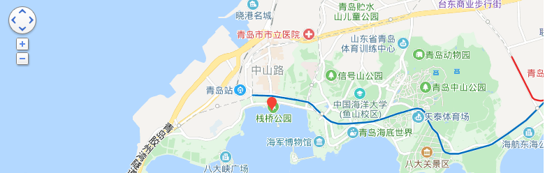

青岛栈桥
时间：2019/11/11

【简介】 | ||
|---|---|---|
|
青岛栈桥始建于清光绪十八年(1892年)，是青岛最早的军事专用人工码头建筑，现在是青岛的重要标志性建筑物和著名风景游览点。 2019年4月12日，入选由中国科协调宣部主办，中国科协创新战略研究院、中国城市规划学会共同承办的“中国工业遗产保护名录（第二批）”。 |
青岛栈桥全长440米，宽8米，钢混结构。桥南端筑半圆形防波堤，堤内建有民族形式的两层八角楼，名“回澜阁”，游人伫立阁旁，欣赏层层巨浪涌来，“飞阁回澜”被誉为“青岛十景”之一。 桥北沿岸，辟为“栈桥公园”，园内花木扶疏，青松碧草，并设有石椅供游人憩坐，观赏海天景色 |
|
【主要景点】
回澜阁位于青岛市市南区海滨，与小青岛隔水相望，北端与中山路成一直线相连。被视为青岛的重要标志。此阁为二层八角凉亭，亭子由彩色琉璃瓦覆盖，24根红漆柱子支撑，阁心有螺旋形楼梯，楼上四周为玻璃窗，有“一窗一景，一景一画”之说。 可以凭窗眺望，全方位地看到美丽的青岛湾和周围的各个景点以及著名建筑。
【交通信息】
乘2路、5路、6路、8路、25路、26路、217路、220路、223路、225路、301路、304路、305路、307路、308路、311路、312路、316路、320路、321路、325路、412路、501路、隧道2路、隧道3路、隧道6路均可到达。 坐地铁M3号线在青岛站下车。